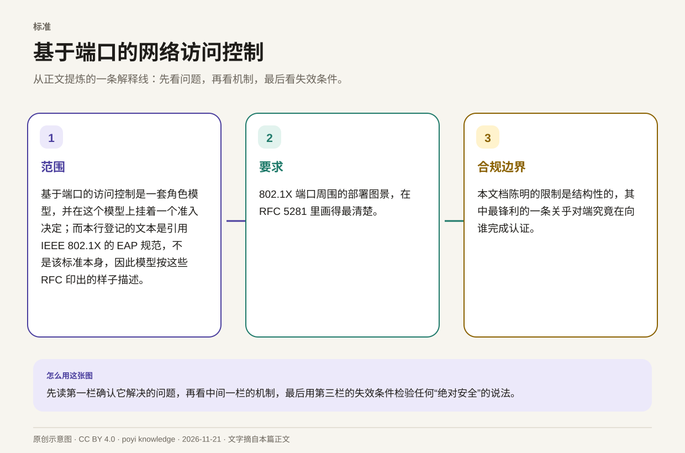
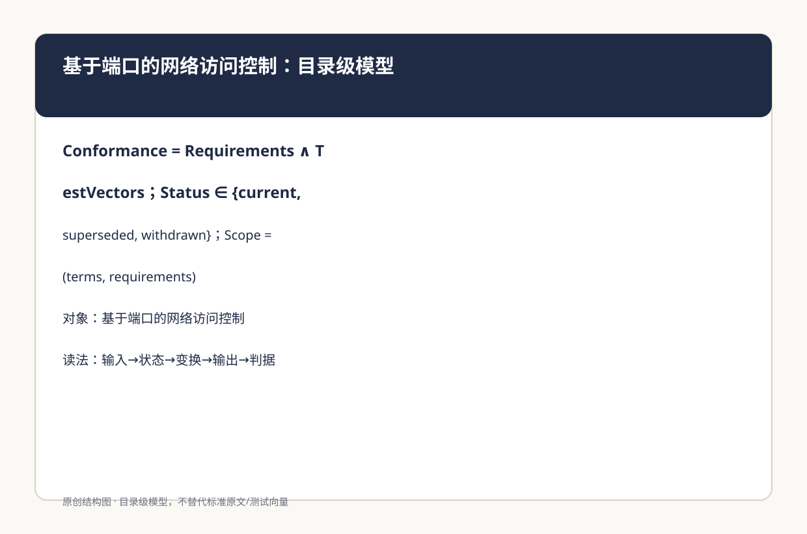

原理与机制
标准：基于端口的网络访问控制（Port-Based Network Access Control）。基于端口的访问控制是一套角色模型，并在这个模型上挂着一个准入决定；而本行登记的文本是引用 IEEE 802.1X 的 EAP 规范，不是该标准本身，因此模型按这些 RFC 印出的样子描述。RFC 3748 第 1.2 节直接定义链路两端。认证器是 「The end of the link initiating EAP authentication.」（发起 EAP 认证的链路一端）（第 188 行），对端是 「The end of the link that responds to the authenticator.」（响应认证器的链路一端）（第 193 行）；同一条目接着说在该 IEEE 标准的词汇里 「this end is known as the Supplicant.」（这一端被称为 Supplicant）（第 194 行），而 Supplicant 条目在第 196-199 行把这一对应关系再说回去。第三个角色是后端认证服务器，即向认证器提供认证服务的实体（第 201-205 行）。承载这次交互、把它送过 IEEE 802 链路的封装方式是以引用而非复制来确定的：「The encapsulation of EAP over IEEE 802 is defined in [IEEE-802.1X].」（EAP 在 IEEE 802 之上的封装由 [IEEE-802.1X] 定义）（第 1035 行）。端口所执行的那个决定的定义很谨慎，它不只是密码学上的成功：一次成功认证是这样一段 「exchange of EAP messages, as a result of which the authenticator decides to allow access by the peer, and the peer decides to use this access.」（EAP 消息交换，其结果是认证器决定允许该对端接入，而对端也决定使用这一接入）（第 246-249 行，引文中的两处多空格是该文件自身的换行缩进）；文本还提醒已通过认证的对端仍可能被拒，接入可 「denied by the authenticator due to policy reasons.」（因策略原因被认证器拒绝）（第 252 行）。最后，执行点并不是一个二值闸门。RFC 3748 在第 2787-2790 行写道：「authentication failure will result in denied access to the controlled port in [IEEE-802.1X], limited traffic may be permitted on the uncontrolled port.」（认证失败会使对端被拒绝访问受控端口，而非受控端口上仍可能允许有限流量）。正是这一区分——一个端口被拒、另一个仍在承载有限流量——使 802.1X 端口的状态成为策略问题，而不是开关档位问题。

为什么重要
这一设计选择先以优点的形式写出来：「One of the advantages of the EAP architecture is its flexibility.」（EAP 架构的优点之一是它的灵活性）（rfc3748.txt:152）。灵活性是用什么换来的，写在紧接着的段落第 155-160 行：与其要求认证器为每一种新的认证方法升级，EAP 允许使用一个可实现部分或全部方法的后端认证服务器，认证器对部分或全部方法与对端只作直通转发。于是一台端口控制设备不必为了支持新方法而变成密码学端点。代价在同一列表中点明（第 464-466 行）：把服务器与认证器分开会使安全性分析复杂化，也在需要时使密钥分发的分析复杂化。该架构还收窄了端口能够协商的内容。第 3.3 节 EAP Usage Within IEEE 802 说 「The IEEE 802 encapsulation of EAP does not involve PPP, and IEEE 802.1X does not include support for link or network layer negotiations.」（EAP 在 IEEE 802 上的封装不涉及 PPP，而 IEEE 802.1X 不包含对链路层或网络层协商的支持）（第 1036-1038 行）；第 1038-1040 行由此推出的结论是，在 802.1X 之内无法协商 PAP 或 CHAP 等非 EAP 机制。这不是线路的限制，而是有意划定的范围：该层承载一次认证交换，别的都不承载。而这一层之所以被选中，取决于链路类型：第 144-150 行记录 EAP 可用于专用链路、交换电路、有线与无线介质，已在用 IEEE 802 的交换机与接入点上实现，且有线封装由该 IEEE 标准描述——把 EAP 直接放到局域网上的代价，就是接受这套基于端口的模型。
应用与实例
802.1X 端口周围的部署图景，在 RFC 5281 里画得最清楚。它先从承载方式本已存在这一事实出发：「For example, PPP [RFC1661] or EAPOL [802.1X] may be used to transport EAP between client and access point; RADIUS [RFC2865] or Diameter [RFC3588] are used to transport EAP between access point and TTLS server.」（例如可以用 PPP 或 EAPOL 在客户端与接入点之间承载 EAP，用 RADIUS 或 Diameter 在接入点与 TTLS 服务器之间承载 EAP）（rfc5281.txt:680-683；引文内部的四空格连续是该文件自身的换行缩进，未作抹平）。这一句在四行之间给出了完整拓扑——接入侧用局域网上的 EAP，服务器侧用 AAA 协议——而 EAPOL 正是那部 IEEE 标准所提供的封装。RFC 5281 自己定义的方法，「EAP-TTLS is an EAP (Extensible Authentication Protocol) method」（EAP-TTLS 是一种 EAP 方法）（第 25 行），又显示这一端口在实践中被用来做什么：它隧道化一个 TLS 会话，其数据阶段承载任意一种认证机制，第 33-40 行点名可能是 PAP、CHAP、MS-CHAP 或 MS-CHAP-V2，摘要在第 37-40 行把这说成让遗留的口令类协议仍能对上现有认证数据库，同时保护它们免受窃听与中间人攻击。与这条断言一并交代两点诚实说明。其一，本文档类别是 Informational（第 9 行），所以它是架构的证据，不是要求的证据。其二，本行登记的三份文件都不含 IEEE 标准的任何正文：它们复现的是该标准的角色名称与书目身份，而 rfc5281.txt:2710-2712 给出的身份是 「IEEE Standard 802.1X-2004, December 2004.」（IEEE Standard 802.1X-2004，2004 年 12 月），即这些文档写作时所依据的那个版本。

边界与攻击面
本文档陈明的限制是结构性的，其中最锋利的一条关乎对端究竟在向谁完成认证。当 EAP 服务器位于与认证器不同的机器上时，认证 「server, not between the peer and the authenticator.」（发生在对端与认证服务器之间，而不是发生在对端与认证器之间），因此正如第 3003-3006 行所说，对端不可能仅凭 EAP 来验证它正在对话的那个 「the authenticator that it is speaking to, using EAP alone.」（认证器的身份）（rfc3748.txt:3003-3006）。掌控端口的设备于是基于别的理由被信任，方法本身并不为它担保。第二个后果是结果令牌本身不属于认证方法：若正在运行的方法并不允许在此结束，则 「Success and Failure packets MUST NOT be sent by an EAP authenticator」（Success 与 Failure 分组不得由 EAP 认证器发送）（第 1300-1302 行）；默认情形下对端会静默丢弃一连接就发来的现成 Success 分组，这正是阻止假冒认证器靠提前宣告成功绕过相互认证的做法（第 1304-1309 行；canned 一词在原文里带文件自己的引号）。这些令牌不被确认，因而可能丢失，所以文本要求对端把下层成功指示当作 Success 分组丢失的证据来处理（第 1311-1315 行、第 1049-1053 行）。第三，协商本身是攻击面：「In a negotiation attack, the attacker attempts to convince the peer」（协商攻击中，攻击者试图说服对端） 与认证器去协商一个更弱的 EAP 方法，而 EAP 不为 Nak Response 分组提供任何保护（第 2762-2766 行）。第 2768-2776 行给出的对策是管理性的而非密码学的——每个具名对端身份只对应一种认证方法，于是可供挑选的方法集合根本不存在。第四，执行边界在设计上就会漏：「authentication failure will result in denied access to the controlled port in [IEEE-802.1X], limited traffic may be permitted on the uncontrolled port.」（认证失败会使对端被拒绝访问受控端口，而非受控端口上仍可能允许有限流量）（第 2787-2790 行）。非受控端口之所以存在，是为了承载认证本身，但它同时也是模型中攻击者始终能够接触的那一部分。
历史与背景
RFC 5216 对这个模型做了两次定年，一次靠它自己的报头，一次靠它引用的版本。其报头（第 7-14 行）给出 2008 年 3 月，并印着 「Obsoletes: 2716」（取代 2716）。它的资料性参考文献（第 1615-1618 行）把该标准列为 「IEEE Standard 802.1X-2004」（IEEE Standard 802.1X-2004）、「December 2004.」（2004 年 12 月）——也就是说本行证据的留存件引用的是 2004 版，而这三个文件里没有印出任何更晚的版本；目录自身的来源行提到 2020 年修订，本行任何登记文本都不为它作证，因此不作断言。除书目之外，RFC 5216 自带一份角色模型，值得与 RFC 3748 对照：认证器是 「The entity initiating EAP authentication.」（发起 EAP 认证的实体）（第 147 行），对端是 「The entity that responds to the authenticator.」（响应认证器的实体）（第 150 行），而在该 IEEE 标准的词汇里 「this entity is known as the Supplicant.」（这一实体被称为 Supplicant）（第 151 行）——同一套对应关系由另一份文件再述一次，这正是本文把该术语视为共享词汇、而非 EAP 发明物的理由。两份 RFC 之间的变化记在 RFC 5216 自己的变更清单第 1749-1752 行：「As EAP is now in use with a variety of lower layers, not just PPP」（由于 EAP 如今已用于多种下层，而不只是它最初为之设计的 PPP），文本据此把 PPP 的提法收缩到 PPP 特有行为，并改而引用其他下层；第 1 节所列的其他下层里包括 「IEEE 802 wired networks」（IEEE 802 有线网络）（第 100-106 行），而那句话在第 105 行之前收住，因为第 105 行把一个 IEEE 802.11 的记号在行尾带连字符处断开。另有一条带日期的技术说明可以为这段历史收尾：EAP-TLS 自己的安全声明表（第 1302-1315 行）主张相互认证与抗字典攻击，同时把 channel binding 一栏印为 No，而这正是 RFC 3748 第 7.15 节就直通认证器所描述的那个缺口。
逐步示例与核验
形式模型与复算步骤
[S=\min_i S_i,\quad S_i\in{\text{密钥强度},\text{分组安全},\text{实现安全}}]
基于端口的网络访问控制的公开参数、密钥/随机数与消息；变量说明：S 为综合安全强度；各分量取最小值，不能只看密钥位数。1.读取标准规定的密钥/分组/模式参数。2.按标准表换算等效强度。3.取最弱分量作为系统强度。边界：公式只覆盖已登记的参数与假设；参数取值、标准版本和实现细节仍以来源为准。
参考出处
- Wikipedia search entry for 基于端口的网络访问控制. https://zh.wikipedia.org/w/index.php?search=%E5%9F%BA%E4%BA%8E%E7%AB%AF%E5%8F%A3%E7%9A%84%E7%BD%91%E7%BB%9C%E8%AE%BF%E9%97%AE%E6%8E%A7%E5%88%B6
- Handbook of Applied Cryptography (Menezes, van Oorschot, Vanstone). https://www.cacr.math.uwaterloo.ca/hac/